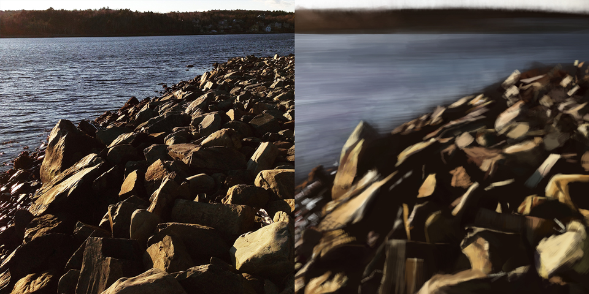
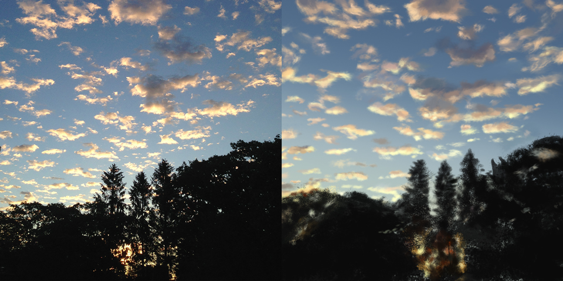
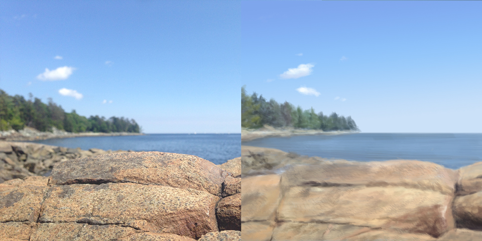

October 2015
Color and Light – Summer
Dane Aleksander—wildlife painter in Halifax, Nova Scotia.
This article is continued from Week 1: Color and Light. This second chapter shares a sample of continued color studies from part way through the course Designing with Color and Light with Nathan Fowkes. These color studies continue to explore the basic principles of color harmony: variety, unity, unity with variety. Again all paintings are created in Adobe Photoshop, and all photographs are my own.
Wind (digital painting, 2015)
Faces (digital painting, 2015)
Rise in the East (digital painting, 2015)
Point Pleasant Blue (digital painting, 2015)
“[...] You have to learn to think of color, and to design color, in terms of contrast, and that is why the color wheel is a useful tool because the color wheel arranges colors in terms of how they contrast with each other.” — Nathan Fowkes, Designing with Color and Light
Continue to Week 3: Fall and Winter